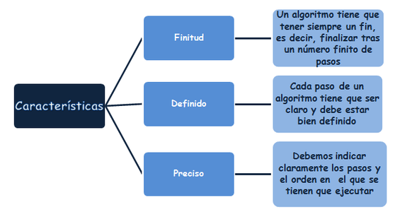

• Precisos. Objetivos, sin ambigüedad.
• Ordenados. Presentan una secuencia clara y precisa para poder llegar a la solución.
• Finitos. Contienen un número determinado de pasos.
• Concretos. Ofrecen una solución determinada para la situación o problema planteados.
• Definidos. El mismo algoritmo debe dar el mismo resultado al recibir la misma entrada.

|